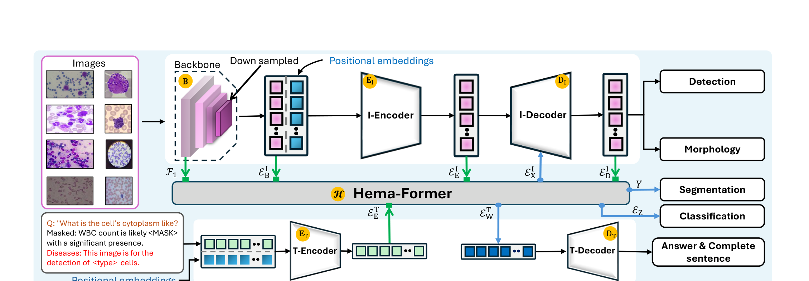
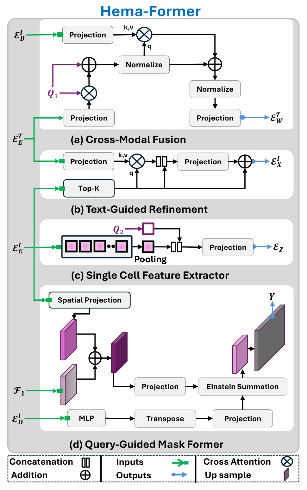
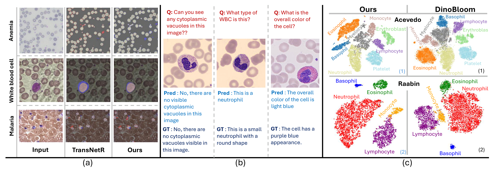

Uni-Hema: can one hematopathology model handle boxes, masks, cells, morphology, and language?
The short version. Uni-Hema asks whether digital hematopathology can move from a collection of task-specific models to one model that sees cells, masks, boxes, attributes, and text prompts. The tension is real: detection works on full fields of view, segmentation works at pixels, classification works on single-cell global features, morphology labels sit at object level, and visual question answering (VQA) plus masked language modeling (MLM) require language. The paper's answer is Hema-Former, a router that does not force every task to read the same final feature. It exposes backbone, image-encoder, image-decoder, and text features to four submodules, each matched to a task granularity. The mean-level numbers are the headline, but their margins differ sharply. On detection the jointly trained Uni-Hema only edges the mean — 61.1 mAP50 (mean average precision at 0.50 intersection-over-union) versus DINO's 60.4 and YOLO's 59.4 — and it loses most individual detection rows. It wins more clearly on single-cell classification (F1 92.5) and field-of-view morphology (F1 77.2); F1 is the harmonic mean of precision and recall. It also trails TransNetR on the segmentation mean. The language data is also semi-synthetic and the paper explicitly says that dataset is not recommended for medical use. Read Uni-Hema as a strong unified-model prototype, not a finished clinical system.

1. The core problem: blood-smear diagnosis is multi-granular
Digital hematopathology is not one vision task. A blood film may ask for malaria parasite detection, white-blood-cell classification, red-cell segmentation, leukemia morphology attributes, or a language explanation of cytoplasm and nuclear shape. Those outputs live at different granularities. A bounding box is an instance-level answer. A binary mask is a pixel-level answer. A class label is usually a single-cell answer. A VQA response is a text answer conditioned on a visual observation.
The usual solution is to train one model per task and often one model per dataset. That is convenient for benchmark papers, but it is awkward for a diagnostic workflow. The model that detects a parasite may know nothing about the model that describes a leukocyte. The model that segments a red blood cell may never see the morphology labels used by a leukemia dataset. Uni-Hema tries to make those signals share a representation without forcing them into one output format.
Q: Why is "one model" hard here? Multi-task learning is not new.
Guide: the issue is not only task count. It is the mismatch between where the answer lives.
A: If all tasks needed the same feature, a shared backbone plus several heads would be enough. Uni-Hema's tasks do not need the same feature. Segmentation needs local spatial detail. Detection and morphology need object queries. Single-cell classification needs a global cell representation and should not depend on a text prompt. VQA and MLM need visual evidence aligned with words. Hema-Former is the paper's answer to that mismatch: expose several hierarchy levels and let each task draw from the level that fits its output.
Takeaway: The unified-model claim is credible only if the architecture routes information by granularity, not if it merely bolts many heads onto the last layer.
2. What the authors actually claim
The paper states four contributions. First, Uni-Hema is presented as a unified vision-language model for digital hematopathology across six disease or disorder settings, including leukemia, malaria, anemia, and sickle-cell disease. Second, Hema-Former is introduced as the fusion mechanism that combines image and text features at different hierarchy levels and emits task-appropriate features. Third, the authors combine 46 public hematology datasets: 18 detection datasets, 11 segmentation datasets, and 17 classification datasets, plus curated VQA and MLM data. Fourth, they argue that a jointly trained model can match or exceed single-task, single-dataset baselines on many tasks, including some unseen datasets.
The larger reader inference is narrower than the abstract's strongest wording. Uni-Hema does not prove that one hematopathology model is uniformly better than specialized models. It proves something more specific: a unified model can be competitive across several incompatible task formats when the fusion module separates language, instance, global-cell, and pixel pathways. The losses on several detection rows and on the segmentation mean are not side notes; they define the boundary of the claim.
How this page reads "superior or comparable"
Whenever a table is mixed, this page says it is mixed. Uni-Hema wins the Table 1 detection mean, but not every detection row. It wins the single-cell classification mean and all four FoV morphology rows. It does not win the segmentation mean against TransNetR. Table 2 shows the same pattern: the unseen single-cell classification mean is best for Uni-Hema, but Acevedo and MiniSit are slightly higher for DinoBloomS.
3. Dataset formation: 46 public datasets plus semi-synthetic language tasks
The paper builds a multi-task training corpus rather than proposing one new manually annotated benchmark. It preserves existing annotations from public hematology datasets, then adds text prompts and semi-synthetic language examples for tasks that need text.
| Task family | Scale and source | Role in Uni-Hema | Important caveat |
|---|---|---|---|
| Detection | 18 public datasets, about 85,000 full-field microscopy images and 30 distinct cell classes. | Train and evaluate cell localization across leukemia, malaria, sickle-cell, parasite, and normal blood-smear settings. | Several small-sample detection datasets still favor single-dataset DINO or YOLO baselines. |
| Segmentation | 11 public datasets covering malaria-infected cells, white blood cells, anemia, and red blood cells. | Train the query-guided mask former and evaluate Dice overlap. | The paper uses simple mask upscaling in one stage and a small upsampler later because of resource limits. |
| Single-cell classification | 17 public datasets. Section 4.1 describes about 350,000 high-resolution single-cell images across nearly 45 WBC and RBC classes. | Pre-train visual modules and evaluate the SCFE representation against feature extractors such as DinoBloomS, DINOv2S, DINOv3S, and ResNet. | The contribution bullet summarizes classification scale as about 320K; the dataset paragraph gives about 350K. |
| VQA and MLM | WBCAtt-VQA and LeukemiaAttri-MLM are curated from WBCAtt and LeukemiaAttri using BioMistral 7B and Gemini 1.5 with morphology annotations as prompts. | Train text-conditioned reasoning and sentence completion. | The paper says this semi-synthetic dataset is curated only for experiments and is not recommended for medical use. |
The language prompts are task-specific. Detection and segmentation prompts use a template like "This image is for the detection of <type> cells." VQA prompts start with a question. MLM prompts mask words in a morphology sentence. Single-cell classification intentionally relies only on visual features.
Q: What makes the data problem different from a normal multi-task dataset?
A: The paper does not have one dataset with every label on every image. It has a patchwork of task-specific public datasets. Uni-Hema must therefore learn from partial supervision: some images teach boxes, some teach masks, some teach cell classes, and some teach language. The architecture and training schedule are designed around that patchwork.
Takeaway: Uni-Hema's data contribution is an integration claim: useful supervision is spread across many imperfect public datasets, and the model has to absorb it without requiring a fully annotated universal benchmark.
4. Pipeline: two branches, one router, several task exits
{kind=link}

For an input image \(I\), the ResNet-50 backbone \(B\) extracts multi-scale feature maps \(\{F_i\}_{i=1}^{L}\), with each \(F_i\in\mathbb{R}^{c_i\times m_i\times n_i}\). These maps are projected into image embeddings \(E_B^I\in\mathbb{R}^{V_t\times M}\), then a six-layer DINO-DETR-style image encoder produces \(E_E^I\in\mathbb{R}^{V_t\times M}\). In parallel, a T5-style text encoder maps a prompt \(T\) to \(E_E^T\in\mathbb{R}^{L_t\times N}\). The image decoder produces disease-informed object embeddings \(E_D^I\), which feed detection, morphology, and segmentation.
Q: Why does the architecture expose so many intermediate features?
A: Each intermediate feature answers a different question. \(F_1\) keeps local spatial detail, so it is useful for masks. \(E_E^I\) has global and local context, so it is useful for selecting object queries and extracting single-cell features. \(E_D^I\) has object-level information, so it can drive detection, morphology, and query-conditioned masks. \(E_E^T\) and \(E_W^T\) are the bridge to language. The model is unified because these features belong to one network; it is not monolithic because each task uses the layer that fits it.
Takeaway: Uni-Hema's pipeline is best read as shared extraction plus task-specific routing, not as one universal representation used everywhere.
5. Method: Hema-Former as a granularity router
Hema-Former is the mechanism core. It contains four submodules. Cross-modal fusion (CMF) aligns text and visual features for VQA and MLM. Text-guided visual refinement (TGVR) uses text to adjust top-K object queries for detection and morphology. The single-cell feature extractor (SCFE) creates a text-independent global cell feature for classification. The query-guided mask former (QGMF) combines object queries with spatial features to produce masks.
{kind=link}

5.1 CMF: language needs visual evidence in text-token space
CMF first projects the text embeddings and cross-attends from a learned query into the text features. The PDF text writes the learned query as \(Q_2\), while Figure 3 labels the CMF query \(Q_1\); the role is the same: a learned query that starts the fusion.
The second step lets that intermediate state attend to visual embeddings. The output \(E_W^T\) is the language-side multimodal feature used by the text decoder.
What CMF buys
A text decoder cannot answer "What is the cytoplasm like?" from an image-only tensor without an alignment step. CMF makes the visual evidence available in a form the text decoder can attend to. If CMF is weak, the language head can still sound fluent, but it has less reason to be visually grounded.
5.2 TGVR: object tasks need disease-conditioned queries
TGVR starts from the top-K image queries selected by objectness from \(E_E^I\). It then uses the projected text embedding \(E_E^{T'}=P(E_E^T)\) as key and value in cross-attention. The refined query is concatenated with the original top-K query and projected into \(E_X^I\), which feeds the image decoder.
The reason for TGVR is simple. Detection and morphology are not just "find objects"; they are disease-context tasks. The prompt can say whether the image is being processed for a particular disease or cell type. TGVR lets that context reshape the object queries before the decoder predicts boxes and morphology.
5.3 SCFE: classification should not depend on a prompt
For single-cell classification, the paper deliberately avoids text conditioning. SCFE takes the mean of the image-encoder embeddings, concatenates it with a learned query \(Q_2\), and projects the result to \(E_Z\in\mathbb{R}^{1\times M}\). That feature is used as a global single-cell representation.
This is a small but important design choice. A single-cell class label should be stable even when no diagnostic text prompt is supplied. If classification were routed through the text-conditioned branch, the model could inherit prompt artifacts that have nothing to do with cell appearance.
5.4 QGMF: segmentation needs object queries and pixels
QGMF produces masks by joining two kinds of evidence. The spatial side uses the shallow backbone feature \(F_1\) fused with image-encoder features \(E_E^I\), then projected to \(G_{\mathrm{proj}}\). The object side projects decoder embeddings \(E_D^I\) through an MLP and transpose.
Why this is not just a segmentation head
A plain upsampling head would turn one spatial feature map into a mask. QGMF makes the mask conditional on object embeddings from the image decoder. That means the pixel map is not deciding alone; it is filtered by the object query that already carries disease-informed instance information. For binary segmentation, the paper selects the mask associated with the first embedding as the final prediction.
Q: What is the mechanism in one sentence?
A: Hema-Former does not search for one universal feature. It keeps four routes alive: text-aligned features for language, prompt-refined object queries for detection and morphology, a prompt-free global feature for classification, and query-conditioned spatial features for masks.
Takeaway: The architecture's bet is that multi-task sharing works only after the model separates what must be shared from what must stay task-specific.
6. Training and compute: six stages on one RTX 4090
The main PDF gives the training order, model components, epoch counts for most stages, and total hardware time. It does not state the optimizer, learning rate, or full per-stage training configuration in the main paper; it says those details are in the supplementary material.
| Stage | What is trained | Data / task | Epochs or batch | Frozen or missing details |
|---|---|---|---|---|
| 1 | Image backbone and image encoder | Single-cell classification datasets | 24 epochs, batch size 32 | Optimizer and learning rate not stated in the main paper. |
| 2 | Text encoder and text decoder | Semi-synthetic MLM and QA data for medical context learning | Not stated in the main paper | Schedule and batch size not stated in the main paper. |
| 3 | Vision modules, including TGVR/TGR, SCFE, and QGMF | Classification, segmentation, and detection datasets | 12 epochs; two images per task per batch, total batch size 6 | Text encoder, text decoder, and CMF are frozen. |
| 4 | Image decoder | All detection and FoV morphology datasets | 12 epochs | Other schedule details not stated in the main paper. |
| 5 | Query-guided mask former | Complete segmentation dataset | 24 epochs | The paper notes a small upsampler is used during fine-tuning because of resource limits. |
| 6 | CMF and text decoder | Combined VQA and visual-MLM datasets | 8 epochs | All other modules and submodules are frozen. |
| Component | Setting |
|---|---|
| Visual backbone | ResNet-50. |
| Image encoder / decoder | DINO-DETR architecture with six transformer layers in both encoder and decoder, initialized with pretrained weights. |
| Text branch | T5 encoder-decoder initialized with T5-base weights. |
| Total disclosed compute | Approximately 8 days on one NVIDIA RTX 4090 GPU. |
| Rough GPU-hour estimate | About 192 GPU-hours, computed from 8 days x 24 hours. This is a rough estimate from the paper's disclosed numbers, not an actual bill. |
Q: Why train in stages instead of end-to-end from the start?
A: The data is partial and heterogeneous. Early stages give the image and text branches useful single-modality behavior before the model asks them to cooperate. Middle stages train the visual tasks while language modules are frozen. The last stage trains language fusion after the vision side has learned where cells and masks are. The schedule is a practical way to avoid making every module chase every task at once.
Takeaway: The training recipe is part of the method: staged freezing is how the paper makes a patchwork corpus trainable on a single 4090.
7. Experiments: when does one model beat specialized baselines?
The main table compares Uni-Hema with baselines trained separately for each task and each dataset. mAP50 is mean average precision at an intersection-over-union threshold of 0.50, where higher is better. F1 is the harmonic mean of precision and recall, where higher is better. Dice score is an overlap measure for segmentation masks, where higher is better. BLEU-4 is a four-gram overlap score for generated text, where higher is better.
| Task / metric | Dataset | DINO | YOLO | U-Net | Nanonet | TransNetR | DinoBloomS | Dinov2S | Dinov3S | ResNet | AttriDet | Ours | Disease |
|---|---|---|---|---|---|---|---|---|---|---|---|---|---|
| Cell Detection / mAP50 | H 40x C2 [61] | 36.9 | 37.3 | - | - | - | - | - | - | - | 40.6 | 43.6 | Leukemia |
| H 100x C2 [61] | 43.7 | 44.2 | - | - | - | - | - | - | - | 44.4 | 49.8 | Leukemia | |
| L 40x C2 [61] | 36.6 | 34.9 | - | - | - | - | - | - | - | 35.4 | 40.7 | Leukemia | |
| L 100x C2 [61] | 38.2 | 38.1 | - | - | - | - | - | - | - | 36.2 | 45.6 | Leukemia | |
| H 1000x [72] | 79.8 | 77.3 | - | - | - | - | - | - | - | - | 83.1 | Malaria | |
| L 1000x [72] | 64.2 | 56.5 | - | - | - | - | - | - | - | - | 62.4 | Malaria | |
| H 400x [72] | 70.4 | 66.9 | - | - | - | - | - | - | - | - | 69.0 | Malaria | |
| L 400x [72] | 58.3 | 59.9 | - | - | - | - | - | - | - | - | 54.5 | Malaria | |
| Sickle Cell [80] | 73.6 | 68.6 | - | - | - | - | - | - | - | - | 67.0 | Sickle Cell | |
| Parasites [13] | 38.6 | 46.1 | - | - | - | - | - | - | - | - | 36.2 | Parasites | |
| BCCD [70] | 89.5 | 88.1 | - | - | - | - | - | - | - | - | 87.8 | Normal | |
| TXL [17] | 95.3 | 94.9 | - | - | - | - | - | - | - | - | 94.0 | Normal | |
| Mean | 60.4 | 59.4 | - | - | - | - | - | - | - | 39.1 | 61.1 | - | |
| Single Cell Classification / F1 | Raabin [33] | - | - | - | - | - | 98.0 | 93.7 | 93.8 | 88.1 | - | 98.8 | Normal |
| BMC [43] | - | - | - | - | - | 85.0 | 68.2 | 67.8 | 64.7 | - | 86.2 | Lymphoma | |
| Mean | - | - | - | - | - | 91.5 | 81.0 | 90.8 | 76.4 | - | 92.5 | - | |
| Segmentation / Dice | AneRBC-Anemic [67] | - | - | 78.3 | 91.2 | 93.6 | - | - | - | - | - | 93.4 | Anemia |
| AneRBC-Healthy [67] | - | - | 75.1 | 90.9 | 95.2 | - | - | - | - | - | 94.1 | Normal | |
| Elsafty [14] | - | - | 93.4 | 98.3 | 99.5 | - | - | - | - | - | 99.9 | Anemia | |
| IDB2 [38] | - | - | 91.5 | 33.1 | 92.1 | - | - | - | - | - | 90.5 | Leukemia | |
| KRD [3] | - | - | 93.3 | 86.7 | 94.9 | - | - | - | - | - | 94.5 | Unknown | |
| MD-2019 [1] | - | - | 75.2 | 84.7 | 86.7 | - | - | - | - | - | 77.6 | Malaria | |
| Mean | - | - | 84.5 | 80.8 | 93.7 | - | - | - | - | - | 91.7 | - | |
| Cell Morphology (FoV) / F1 | H 40x C2 [61] | - | - | - | - | - | - | - | - | - | 64.1 | 75.0 | Leukemia |
| H 100x C2 [61] | - | - | - | - | - | - | - | - | - | 71.1 | 75.8 | Leukemia | |
| L 40x C2 [61] | - | - | - | - | - | - | - | - | - | 53.2 | 74.5 | Leukemia | |
| L 100x C2 [61] | - | - | - | - | - | - | - | - | - | 61.8 | 83.6 | Leukemia | |
| Mean | - | - | - | - | - | - | - | - | - | 62.6 | 77.2 | - | |
| Single Cell Visual QA / BLEU-4 | WBCAtt-VQA | - | - | - | - | - | - | - | - | - | - | 56.4 | Normal |
| Masked Language Modeling / BLEU-4 | LeukemiaAttri-MLM | - | - | - | - | - | - | - | - | - | - | 79.8 | Leukemia |
Table 1 supports a calibrated claim. Uni-Hema is strong as a single jointly trained model, but its strength differs by task. Detection is best on all four leukemia rows and on H 1000x malaria, yet it loses to DINO or YOLO on L 1000x, H 400x, L 400x, Sickle Cell, Parasites, BCCD, and TXL. Segmentation is competitive, but TransNetR has the better mean, 93.7 versus 91.7. The cleanest wins are FoV morphology, where Uni-Hema beats AttriDet on every listed row, and single-cell classification, where the printed mean is 92.5.
{kind=link}

Q: What should a skeptical reader carry from Table 1?
A: The result is not "one model wins everything." The result is "one model trained once stays competitive across many incompatible tasks and wins several important means." That is a different and more defensible claim. It is especially convincing where the baseline is a task-specific model and Uni-Hema still wins, such as morphology against AttriDet.
Takeaway: The table validates unification more than domination. The places where Uni-Hema loses are part of the evidence, because they show where specialization still helps.
8. Unseen datasets and ablations: does the routing help?
The unseen-dataset table tests cross-domain adaptability. It mixes tasks: single-cell classification has feature-extractor baselines, while detection and segmentation rows report Uni-Hema values without baseline columns. Macro-F1 is an unweighted average of class-wise F1 scores, useful when classes are imbalanced.
| Task / metric | Dataset | DinoBloomS | Dinov2S | Dinov3S | ResNet | Ours |
|---|---|---|---|---|---|---|
| Cell Classification / F1 | Acevedo [2] | 98.2 | 94.5 | 96.0 | 90.0 | 98.1 |
| MiniSit [87] | 98.8 | 96.8 | 97.1 | 95.2 | 98.6 | |
| C-NMC [47] | 69.6 | 71.0 | 68.0 | 64.9 | 72.8 | |
| RV-PBS 8 [54] | 92.8 | 90.7 | 90.8 | 86.1 | 93.6 | |
| Mean | 89.9 | 88.2 | 88.0 | 84.1 | 90.8 | |
| Detection / mAP50 | Bio-Net [68] | - | - | - | - | 54.7 |
| Malaria [38, 68] | - | - | - | - | 78.5 | |
| Cell Segmentation / Dice | BBBC041Seg [12, 78] | - | - | - | - | 86.2 |
| Cell Morphology (Single) / F1-Macro | WBCAtt [78] | 87.6 | 87.8 | 91.4 | 90.2 | 91.6 |
Table 2 is also mixed. Uni-Hema has the best classification mean, 90.8, but DinoBloomS is slightly higher on Acevedo and MiniSit. Uni-Hema is best on C-NMC and RV-PBS 8, which are the harder-looking classification rows by absolute score. For WBCAtt morphology, Uni-Hema is narrowly above DINOv3S, 91.6 versus 91.4.
| Mechanism tested | Dataset | Without the change | With the change | Interpretation |
|---|---|---|---|---|
| Combine image backbone features with SCFE features for single-cell classification | Acevedo [2] | 97.9% | 98.1% | Small gain on an already saturated unseen dataset. |
| Combine image backbone features with SCFE features for single-cell classification | C-NMC [47] | 68.8% | 72.8% | Larger gain where domain shift is harder. |
| Replace interpolation-based upsampling with a small learnable upsampler | AneRBC-Anemic [67] | 91.8% | 93.4% | The upsampler improves mask quality. |
| Replace interpolation-based upsampling with a small learnable upsampler | AneRBC-Healthy [67] | 92.8% | 94.1% | The same trend holds on healthy red blood cells. |
Q: Do these ablations really test Hema-Former?
A: They test two of its routing decisions, not the entire module. The SCFE ablation asks whether global single-cell classification benefits from combining backbone and single-cell features. The upsampler ablation asks whether the mask route needs a learnable spatial recovery step. They support the granularity story, but they do not isolate CMF or TGVR as cleanly as one would like.
Takeaway: The ablations are directionally consistent with the mechanism, but the paper would be stronger with per-submodule removals for CMF, TGVR, SCFE, and QGMF.
9. Limitations: where the unified claim should stop
| Boundary | Paper evidence | How to read it |
|---|---|---|
| Not uniformly best | Detection loses several individual rows, and segmentation mean is 91.7 versus TransNetR's 93.7. | The correct claim is competitive unified performance, not universal superiority. |
| Semi-synthetic language data | VQA and MLM examples are generated with BioMistral 7B and Gemini 1.5 from morphology annotations, then verified for context coherence. | The language tasks demonstrate multimodal capability, but the paper says the dataset is experimental and not recommended for medical use. |
| Main-paper training details are incomplete | The PDF gives six stages, epochs for most stages, and hardware time, but optimizer and learning-rate details are deferred to supplementary material. | A reproduction attempt needs the supplement or code to recover the full training configuration. |
| Resource-driven segmentation choices | The paper says it relies on simple mask upscaling during Step 3 and a small upsampler in Step 5 because of resource constraints. | Segmentation edge quality may be limited by compute choices, and a stronger decoder could change the comparison. |
| Patchwork supervision | The 46 datasets differ by disease, image type, annotation format, and task. | The corpus is broad, but not a single balanced benchmark with every label on every image. |
| Clinical status | The paper motivates clinical diagnosis but evaluates on public datasets and semi-synthetic language tasks. | The evidence supports research utility. It does not establish clinical deployment readiness. |
Q: What is the most likely overstatement of this paper?
A: "A unified hematopathology model beats specialists." The safer statement is sharper: Uni-Hema trains once across heterogeneous public data and remains competitive across boxes, masks, cell classes, morphology, and language, while winning some means and losing others.
Takeaway: The paper's value is the architecture and data-integration pattern. The remaining work is stronger isolated ablations, fuller training disclosure, and clinical-grade validation.
10. Summary: the useful mental model
In one sentence: Uni-Hema treats digital hematopathology as one shared visual-linguistic problem with several output granularities, and Hema-Former is the routing layer that keeps those granularities from collapsing into one feature.
- Unification is plausible here because the model does not force detection, segmentation, classification, morphology, and language to use the same representation.
- The evidence is strongest for mean detection, single-cell classification, FoV morphology, and unseen-domain classification mean; it is weaker for segmentation mean and several small detection datasets.
- The practical recipe is staged training over partial supervision: pretrain image and text branches, train visual tasks with language frozen, refine task heads, then train language fusion last.
Sources and figure provenance
- Abdul Rehman, Iqra Rasool, Ayesha Imran, Mohsen Ali, Waqas Sultani. Uni-Hema: Unified Model for Digital Hematopathology. arXiv:2511.13889v2 [cs.CV], 19 Nov 2025. The digest manifest links the code repository as
github.com/intelligentMachines-ITU/Uni-Hema; the PDF states that code will be made publicly available. - All formulas, tables, dataset counts, training-stage details, and numerical claims in this page are taken from
/tmp/unihema.txt, produced bypdftotext -layout cvpr2026-best-papers-digest/sources/unihema.pdf /tmp/unihema.txt. The ambiguous Table 1 detection mean row was visually checked against the rendered PDF page: AttriDet reports 39.1 and Uni-Hema reports 61.1. - No fabricated citations are used. Explanatory comments that go beyond the paper's wording are framed as reader interpretation, not as additional paper claims.
- Figure provenance: all four in-body figures are local PNGs under
assets/figures/unihema/and are named by paper figure number. Page Fig. 1 maps to paper Fig. 1 (unihema_fig1.png, six-task overview). Page Fig. 2 maps to paper Fig. 2 (unihema_fig2.png, full architecture). Page Fig. 3 maps to paper Fig. 3 (unihema_fig3.png, Hema-Former submodules). Page Fig. 4 maps to paper Fig. 4 (unihema_fig4.png, qualitative segmentation, VQA, and t-SNE evidence). They come from the repository's existing paper-figure extraction set, using caption-anchored extraction where available and existing figure-block renders for the vector overview figures; this rewrite did not re-extract images.